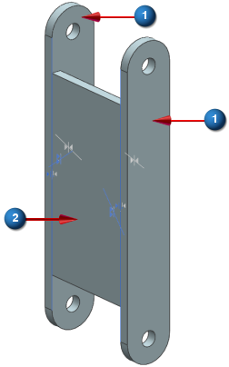
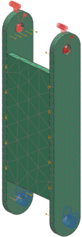
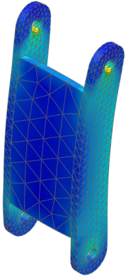

Assembly FEM project
In Advanced Simulation, assembly FEMs are useful for large models where analysts work in collaboration or where multiple instances of individual components are used. The following exercise demonstrates the workflow to create an associative assembly FEM for a simple assembly.
Objective
The assembly shown below is used in an automotive car jack. It is constructed by welding two identical arms to a spacer plate. Create an associative assembly FEM of the assembly and then use the SOL 101 Linear Statics - Global Constraints solution sequence to perform a structural analysis of the assembly when it is compressed by 1000 lbf.

-
 Arm (arm.prt)
Arm (arm.prt)
-
 Spacer plate (spacer_lower.prt)
Spacer plate (spacer_lower.prt)
Required data
|
Property |
Value |
|
Part |
arm.prt spacer_lower.prt lower_arm_assy.prt |
|
Solution sequence |
SOL 101 Linear Statics - Global Constraints |
|
Idealization |
None |
|
Material |
Steel |
|
Mesh |
CTETRA10 Automatic element sizing |
|
Constraints |
Fix two holes as indicated |
|
Loads |
Apply 500 lbf compressive loads to the two holes as indicated |

Notes
A summary of how to complete each step is provided below.
-
Create component FEMs.
-
Open the part and start Advanced Simulation. Create a FEM file named spacer_lower_fem1.fem.
-
Define the material and the physical properties and create a 3D mesh collector.
-
Create a CTETRA10 mesh using automatic sizing. Assign the mesh to the mesh collector you created.
-
Save and close the FEM.
-
Repeat the previous steps to mesh arm.prt. For this part, name the FEM arm_fem1.fem.
-
-
Map the component FEMs to the assembly FEM.
-
Open the lower_arm_assy.prt and start Advanced Simulation.
-
To create a new assembly FEM, in the Simulation Navigator, right-click lower_arm_assy.prt and select New Assembly FEM. Name the new file lower_arm_assyfem1.afm.
-
In the Simulation Navigator, expand lower_arm_assy.prt to reveal the components comprising the assembly.
-
In the Simulation Navigator, right-click spacer_lower.prt and select Map Existing.
-
In the Map CAD Component To Existing FEM dialog box, browse to and select spacer_lower_fem1.fem.
-
In the Simulation Navigator, right-click arm.prt and select Find All Matching Components.
-
In the Simulation Navigator, right-click either of the arm.prt instances and select Map Existing.
-
In the Map CAD Component To Existing FEM dialog box, browse to and select arm_fem1.fem
-
-
Resolve label conflicts.
-
In the Simulation Navigator, right-click lower_arm_assyfem1.afm and select Assembly Label Manager.
-
In the Assembly Label Manager dialog box, click Automatically Resolve.
-
-
Connect the component FEMs in the assembly FEM. Depending on the connection method, you can do this in the FEM or in the Simulation file. In this case, you will use the Surface-to-Surface Gluing command, which is accessed from the Simulation file.
-
In the Simulation Navigator, right-click lower_arm_assyfem1.afm and select New Simulation. Name the new Simulation file lower_arm_assysim1.sim.
-
To simulate the welds that join the parts, use the Automatic Pairing feature in the Surface-to-Surface Gluing command.
-
-
Apply constraints and loads.
-
Fix the nodes on the surface of the two lower holes.
-
Apply 500 lbf bearing loads to each of the two upper holes. Direct the loads to compress the structure.
-
-
Solve the model.
Expected Results
To access the analysis results, in the Simulation Navigator, double-click Results.
To view a contour plot of the von Mises stress, in the Post Processing Navigator, expand Solution 1. Next, expand Stress-Element-Nodal and double-click Von-Mises. The resulting contour plot should look similar to the one shown below.

Completed project
For your reference, a completed model for this project is located in the ..\projects\solved_project_models folder.